Top 100 Gen AI Consumer Apps · 第 7 期
"The Top 100 Gen AI Consumer Apps — 7th Edition"
消费中英简报查看原文 ↗
导读
Three years into the list, only 11 products are new, the fewest debuts of the seven editions. The new cut is observed U.S. consumer-card spending. Usage is already wide. Payment is still narrow, and the money that is spent is highly concentrated.
榜单跟踪三年之后，新面孔只剩 11 个，是七期里最少的一次。这篇真正加上的东西是美国消费者卡的支出排名。结论和市场篇对得上：使用已经铺开，深度和付费仍然很窄，而付费的那一截极度集中。
Web 前 50 用 Similarweb 的月访问，移动前 50 用 Sensor Tower 的月活。支出是 YipitData 的美国卡面板，不是普查，也不能当成公司收入。生成式 AI 必须处在产品体验的中心，原生产品和老产品都可以进榜。从这一期起，以成人内容为主要设计的产品不再与其他产品混排。文章写明，这不代表需求下降；若仍计入，它们会占到 Web 流量榜的 20% 以上。
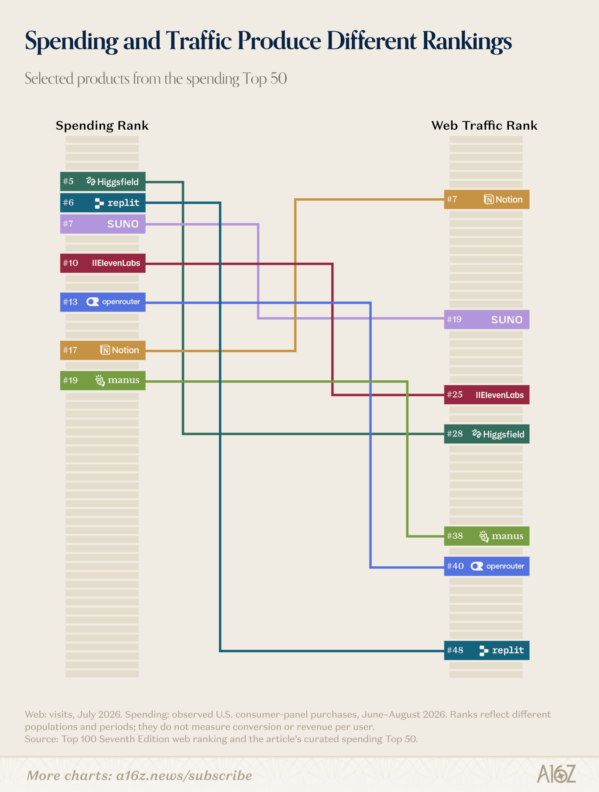
1. 三家模型公司，三场不同的比赛
The headline is unchanged since the first list in September 2023. ChatGPT is still first. In August web visits it led Gemini by about 2× and Claude by about 6×. On mobile monthly actives the gaps were about 2.5× and 14×. In YipitData’s U.S. panel, ChatGPT had about 3× as many consumer paid subscribers as Claude or Gemini.
头条从 2023 年 9 月第一期就没变。ChatGPT 仍是第一。8 月的 Web 访问大约是 Gemini 的 2 倍、Claude 的 6 倍。移动月活的差距大约是 2.5 倍和 14 倍。在 YipitData 的美国面板里，ChatGPT 的消费者付费订阅大约是 Claude 或 Gemini 的 3 倍。
The change is Claude becoming a clear third. It was not on the first web list. It has since passed DeepSeek and Perplexity in traffic, and earlier this year it passed Gemini in U.S. consumer subscribers. Google then moved legacy paid users onto the AI plan, which lifted Gemini’s count without new demand, and the two are now close. Claude’s run followed Cowork in January, Claude Design in April, Fable 5 in June, and a burst of attention. During Anthropic’s late-February dispute with the Pentagon, Claude reached number one among free U.S. mobile apps for the first time.
变化是 Claude 坐稳了第三。它不在第一期 Web 榜上。后来流量超过了 DeepSeek 和 Perplexity，今年早些时候，美国消费者订阅数也超过了 Gemini。随后 Google 把旧的付费用户迁进 AI 套餐，订阅数上去了，但不是新需求，两家现在咬得很近。Claude 这一程的后面是 1 月的 Cowork、4 月的 Claude Design、6 月的 Fable 5，以及一轮公众关注。Anthropic 在 2 月下旬与五角大楼争执期间，Claude 第一次登上美国免费移动应用的第一名。
Anthropic has said it will not put ads in Claude. It pushes subscription instead, and harder than the others. Of Claude’s consumer payers, 7.3% are on Max, the individual plan that starts at $100 a month. The matching share is 1.3% at Google and 1.1% at ChatGPT. By midsummer the panel turned. Claude’s average daily desktop sessions fell in July and August, gross additions slowed, and churn rose. ChatGPT sped up again with the July launch of GPT-5.6 Sol, Terra, and Luna, and with ChatGPT Work.
Anthropic 说过不会在 Claude 里放广告，改用订阅，而且推得比另外两家更狠。Claude 的消费者付费用户里，7.3% 在 Max 上，这是 100 美元一个月起的个人方案。对应比例在 Google 是 1.3%，在 ChatGPT 是 1.1%。到仲夏，面板转了。Claude 的桌面日均会话在 7 月和 8 月下降，新增变慢，流失上升。ChatGPT 则在 7 月的 GPT-5.6 Sol、Terra、Luna 和 ChatGPT Work 之后重新加速。
Only 8% of U.S. ChatGPT subscribers also pay for Claude. ChatGPT’s spenders split more evenly by gender and income, and it leads Anthropic in 47 states. The exceptions named are California, Montana, and Massachusetts. Across six months the three labs shipped 127 launches. Anthropic aimed them at the prosumer, including Design, code review, and Claude Science. Google led with creative models such as Lyria 3 Pro and Gemini Omni. OpenAI shipped both enterprise tools — Work, Sites, Dots — and consumer tools — Images 2.0, Health, personal finance, and job search.
美国 ChatGPT 订阅者里，只有 8% 同时付费订阅 Claude。ChatGPT 的支出在性别和收入上更均匀，并且在 47 个州领先 Anthropic。点名的例外是加利福尼亚、蒙大拿和马萨诸塞。六个月里三家一共发了 127 个新品。Anthropic 对准的是专业消费者，包括 Design、代码审查和 Claude Science。Google 领跑的是创意模型，例如 Lyria 3 Pro 和 Gemini Omni。OpenAI 两边都做：企业侧有 Work、Sites、Dots，消费者侧有 Images 2.0、Health、个人理财和找工作。
读图：100 美元档占自家付费用户的比例是 Claude 7.3%、Google 1.3%、ChatGPT 1.1%。
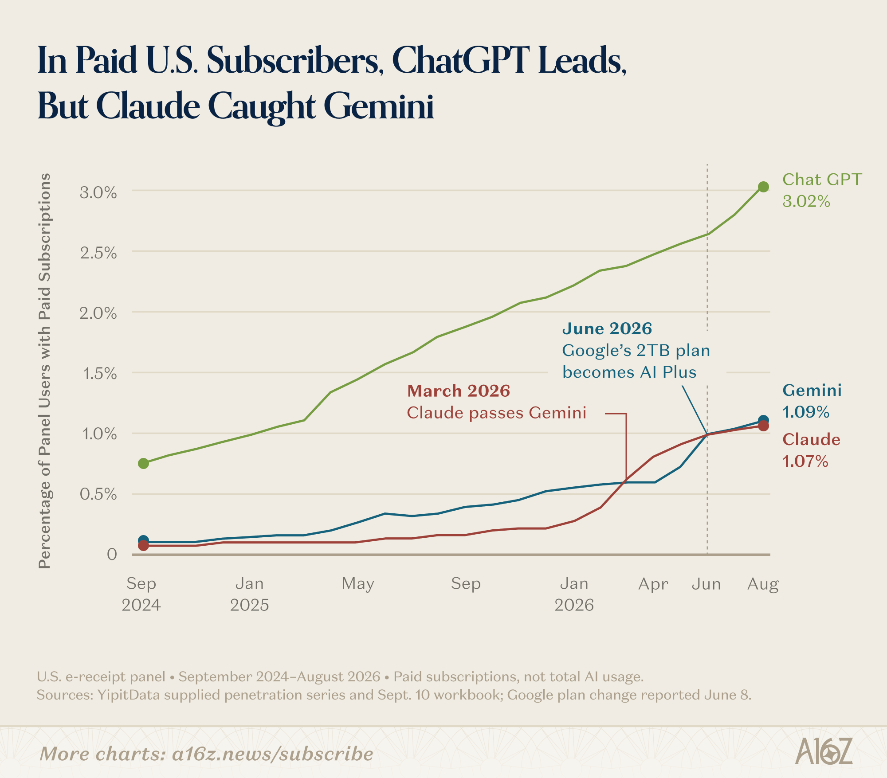
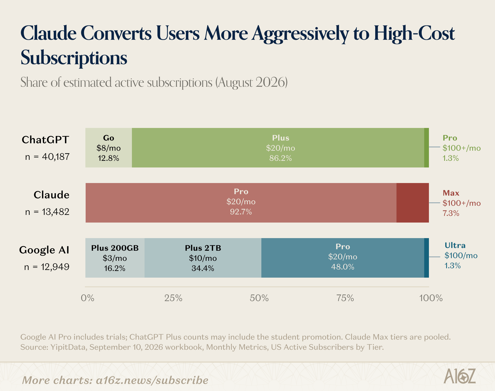
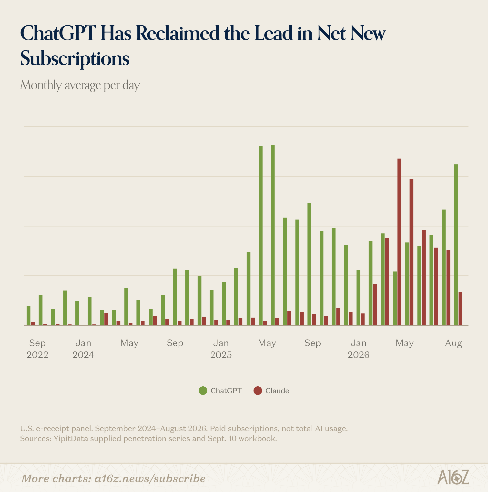
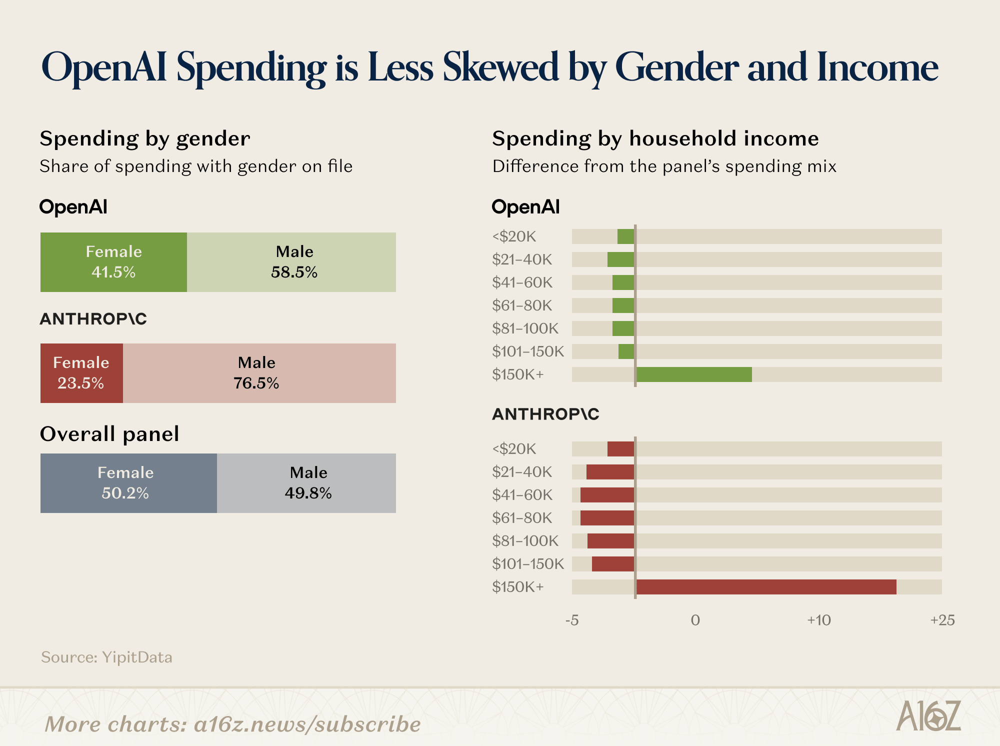
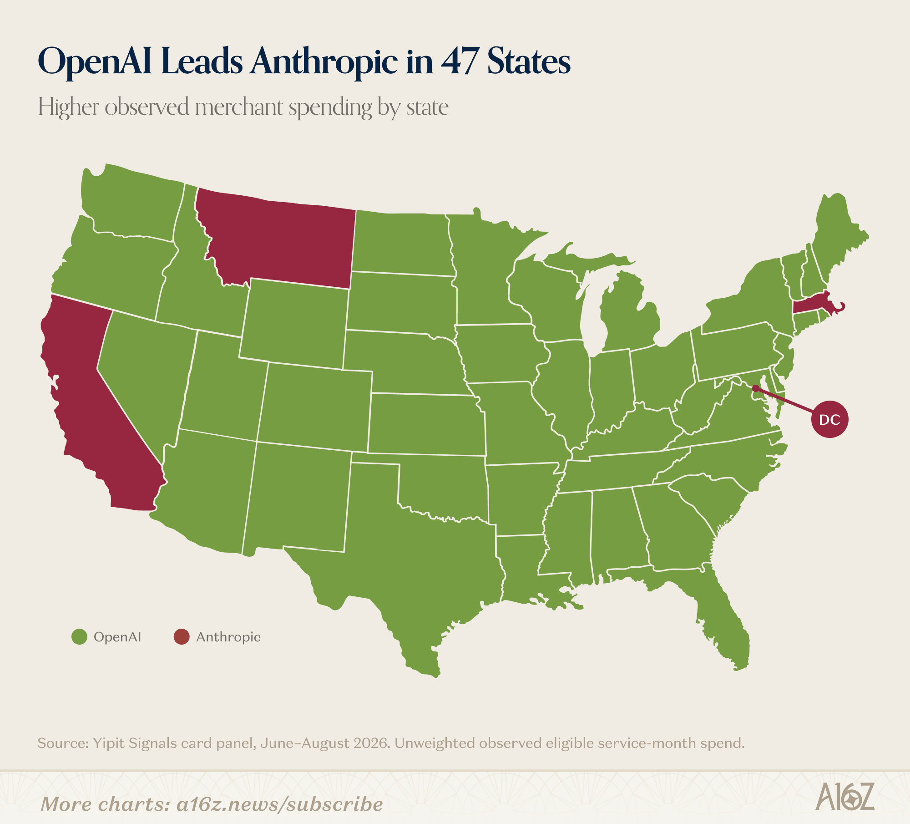
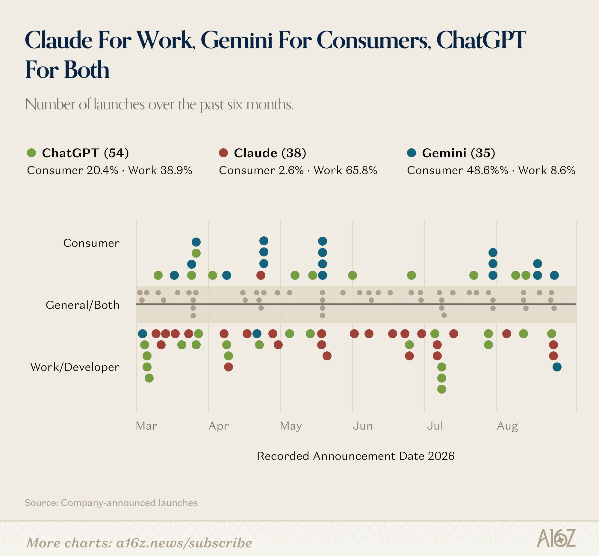
2. 支出是一条幂律
This edition adds a ranking by observed U.S. consumer-card spending. The base is growing and still narrow. In August, 4.5% of eligible consumers in the e-receipt panel had an active personal subscription to at least one of ChatGPT, Gemini, or Claude, up from 2.1% a year earlier. Pew’s separate survey, cited in the opening, says nearly half of U.S. consumers report using AI and 25% use it daily. Breadth and payment are different facts.
这一期新增了按美国消费者卡上观察到的支出排名。付费底盘在变大，但仍然窄。8 月，电子收据面板里有资格的消费者中，4.5% 至少持有 ChatGPT、Gemini、Claude 之一的有效个人订阅，一年前是 2.1%。开篇引用的 Pew 调查是另一件事：近一半美国消费者说自己在用 AI，25% 每天在用。铺开和付钱不是同一个事实。
Among people who already pay, spend is a power law. Only 13% of people who pay for one AI product pay for even one more. The top 1% of payers accounted for 19.5% of observed consumer AI spend, more than the bottom 50% combined at 16.6%. That top 1% averaged $903 a month on consumer cards in August 2026, up 80% over 18 months. Work spend may be higher still and is outside this panel. The median payer spent $25 a month and has barely moved. The opening line is the same concentration at a wider cut: the top 10% of spenders account for roughly half of observed spending, and they tilt toward coding, productivity, and creative tools.
在已经付钱的人里面，支出是幂律。为一个 AI 产品付钱的人里，只有 13% 会再为至少一个别的 AI 工具付钱。支出最高的 1% 占了观察到的消费者 AI 支出的 19.5%，多于后 50% 加起来的 16.6%。这 1% 在 2026 年 8 月的消费者卡上平均一个月 903 美元，18 个月里涨了 80%。工作支出可能更高，而且不在这块面板里。中位数付费者一个月 25 美元，几乎没往上走。开篇用更宽的一刀说了同一件事：支出前 10% 大约占观察到的支出的一半，并且偏向编程、生产力和创意工具。
The heaviest spenders look like prosumers. They over-index on automation and building tools such as n8n, fal, Manus, and Nous Research’s Hermes Agent, and on creative tools such as Higgsfield, Figma, and HeyGen. Traffic and revenue therefore disagree. Twenty-nine of the top 50 vendors by spend appear on neither the web list nor the mobile list. Only seven products sit in the top group of all three: ChatGPT, Claude, Suno, Perplexity, Photoroom, Canva, and Notion. ChatGPT is first on each. The essay expects the paying base to widen if products can charge for transactions instead of seats. Personal agents are the candidate.
最重的支出者看起来像专业消费者。他们在自动化和构建工具上超配，例如 n8n、fal、Manus 和 Nous Research 的 Hermes Agent，也在创意工具上超配，例如 Higgsfield、Figma 和 HeyGen。所以流量和收入会对不上。按支出的前 50 家里面，有 29 家既不在 Web 榜也不在移动榜。三张榜的头部同时出现的只有七个：ChatGPT、Claude、Suno、Perplexity、Photoroom、Canva、Notion。ChatGPT 在每一张上都是第一。文章预期，如果产品能按交易而不是按席位收费，付费底盘会变宽。个人助理是那个候选。
读图：4.5% 的分母是面板里有资格的美国消费者，只数这三家的个人订阅。前 1% 平均一个月 903 美元，中位数 25 美元，分母是观察到的消费者 AI 支出。上一篇 4 月「约 2% 家庭在为某种 AI 付费」是家庭口径，不要和 4.5% 直接比。
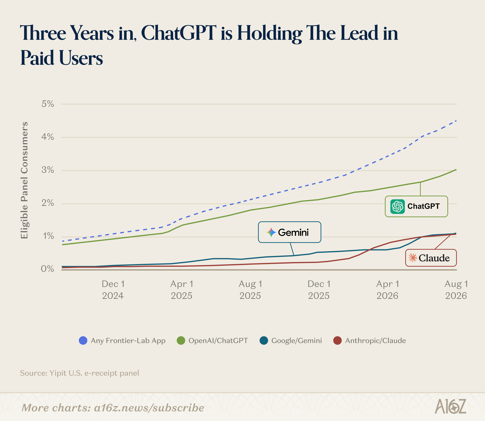
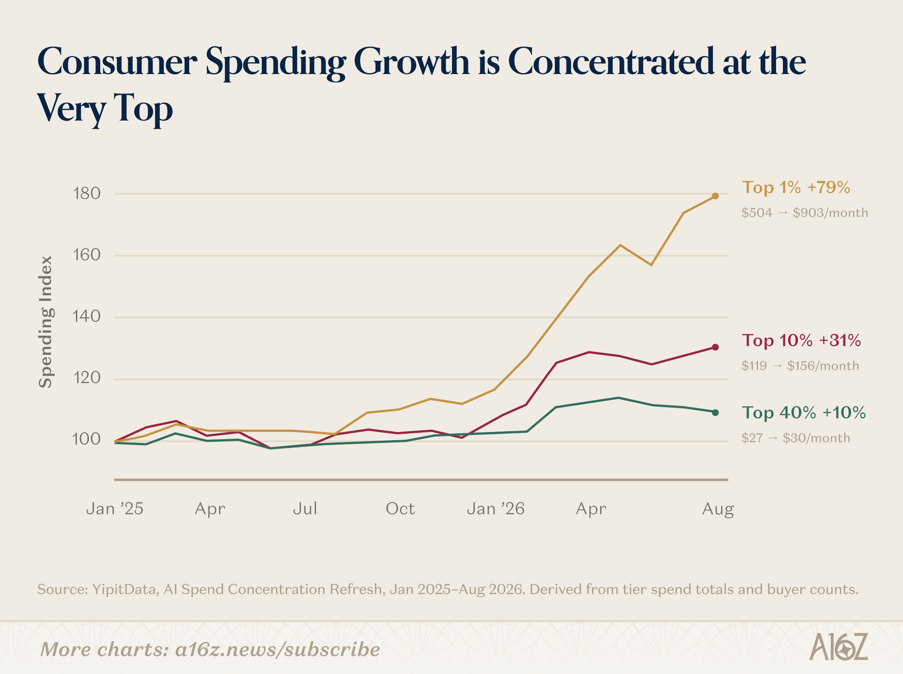
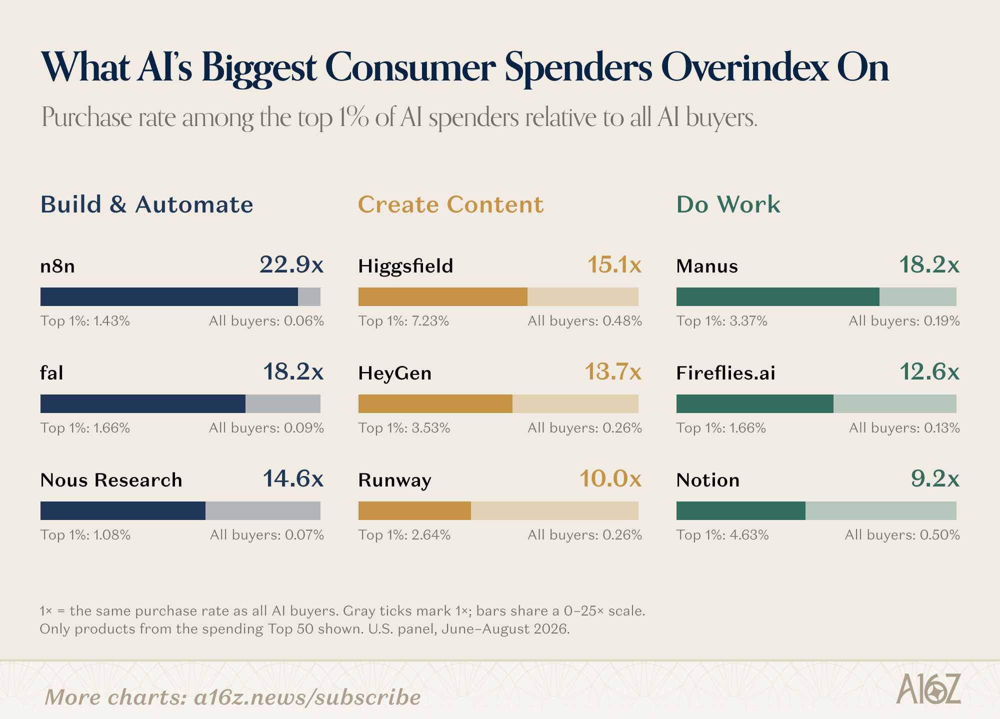
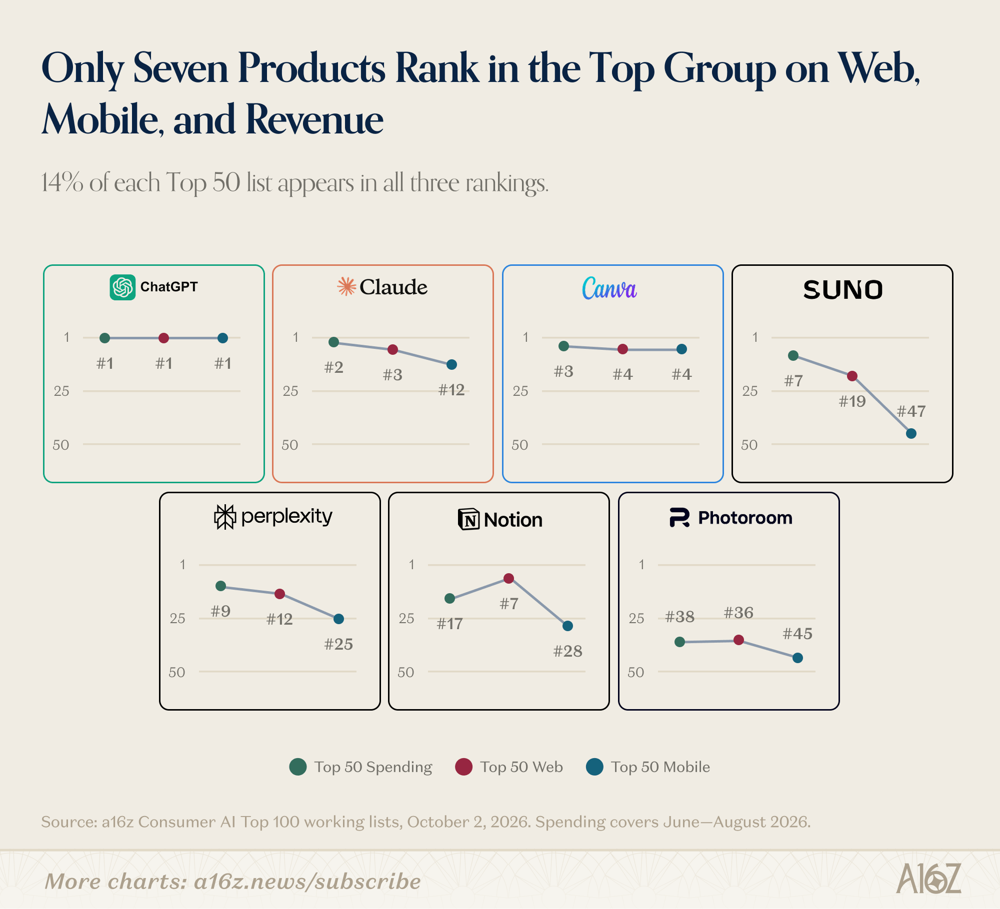
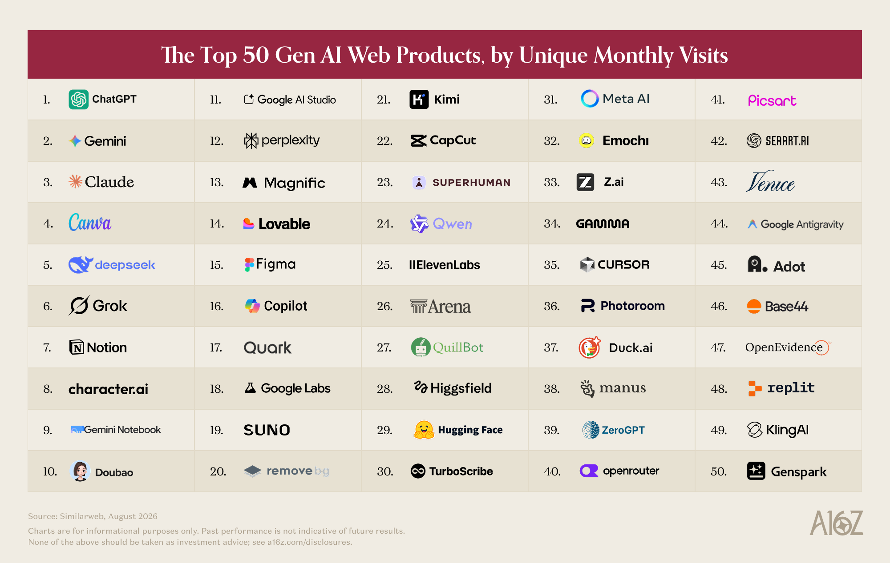
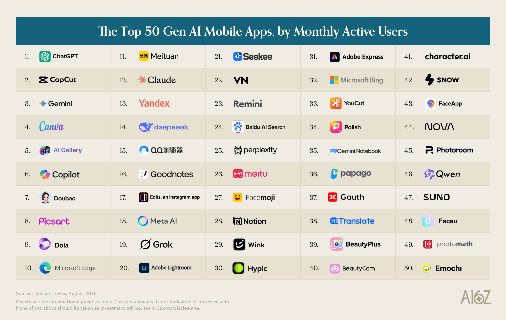
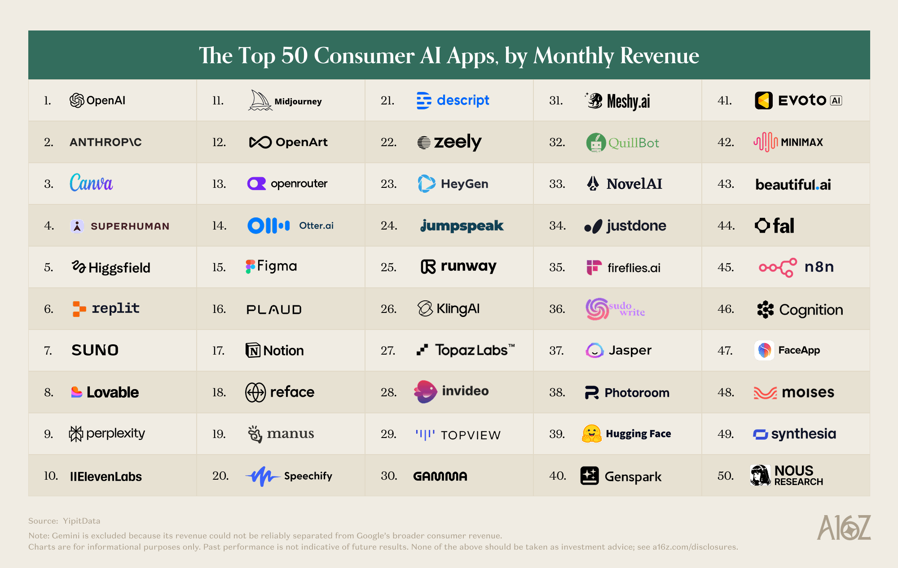
3. 个人助理这场赛
In March the previous edition said agents such as OpenClaw were not yet usable by most consumers, and that they would be. Six months later the essay names Instinct, Tomo, Poke, Lindy, and Town as startup agents reporting hundreds of thousands of users, and names the incumbents’ answers: Meta’s Muse, OpenAI’s Dots, and xAI’s Grok Bot. The products try to live where a human assistant would: text, email, or a call. The channel of the moment is iMessage, where Instinct launched in August 2026. DoorDash has since shipped its own text-to-order agent. More specialized agents often keep a separate app for the deeper work.
3 月的上一期说，OpenClaw 这类智能体多数消费者还用不了，但会用得了。六个月后，文章点了 Instinct、Tomo、Poke、Lindy 和 Town，称这些创业公司的智能体已经报到几十万用户，也点了在位者的回应：Meta 的 Muse、OpenAI 的 Dots、xAI 的 Grok Bot。这些产品想待在人类助理会待的地方：短信、邮件或电话。眼下的渠道是 iMessage，Instinct 在 2026 年 8 月从这里发出。DoorDash 随后上了自己的短信下单智能体。更专的智能体通常还会留一个独立应用来做更深的事。
Early use still looks like the spending tail. David Pawlan’s AssistantBenchmark, across seven early user groups and 1,502 messages, found coding and technical automation to be the most discussed task. Instinct founder Noah Shinn reported that 40% of users connect a personal card within three weeks, and that those users then spend an average of $1,300 a month through Instinct once they buy something. He claims more than $1 billion of annualized transaction volume, half of it travel. Treat the founder figures as company claims.
早期使用看起来仍是支出的那条尾巴。David Pawlan 的 AssistantBenchmark 覆盖七个早期用户群、1,502 条消息，讨论最多的任务是编程和技术自动化。Instinct 创始人 Noah Shinn 称，40% 的用户会在三周内绑一张个人卡，而这些用户一旦开始购买，平均每个月通过 Instinct 花 1,300 美元。他声称年化交易额已经超过 10 亿美元，一半是旅行。创始人报的数字按公司口径读。
Platforms are choosing sides as this traffic becomes real. Amazon cut Muse off in under two weeks. Shopify, Instacart, OpenTable, Expedia, Ticketmaster, Plaid, and others have signed integrations. By late September the consumer matchup in the essay is Instinct against Muse. Instinct, founded by former Sierra researcher Noah Shinn, reportedly passed 100,000 users in three weeks from late August to early September and was still invite-only. Meta launched Muse on September 9, in the browser, desktop, mobile, and WhatsApp. It reportedly reached 250,000 daily actives in the first week and 5 million downloads in under a month, faster than ChatGPT or Claude at launch, and only in the United States and Canada. The comparison that keeps the claim honest is Threads: more than 15 million downloads in its first 22 days in those same two markets. The opponent is still apathy.
流量变得真实以后，平台在选边。Amazon 不到两周就切断了 Muse。Shopify、Instacart、OpenTable、Expedia、Ticketmaster、Plaid 等签了正式集成。到 9 月下旬，文章里的消费者对决是 Instinct 对 Muse。Instinct 由前 Sierra 研究员 Noah Shinn 创立，据说从 8 月下旬到 9 月上旬的三周里超过 10 万用户，当时仍是邀请制。Meta 在 9 月 9 日推出 Muse，覆盖浏览器、桌面、移动和 WhatsApp。据说第一周 25 万日活，不到一个月 500 万下载，快过 ChatGPT 和 Claude 的起步，但只有美国和加拿大。让这个说法保持诚实的对照是 Threads：同样两个市场，前 22 天超过 1,500 万下载。对手仍然是用户的冷淡。
读图：Instinct 的用户数、绑卡比例和交易额都来自创始人口径，按公司自述读。
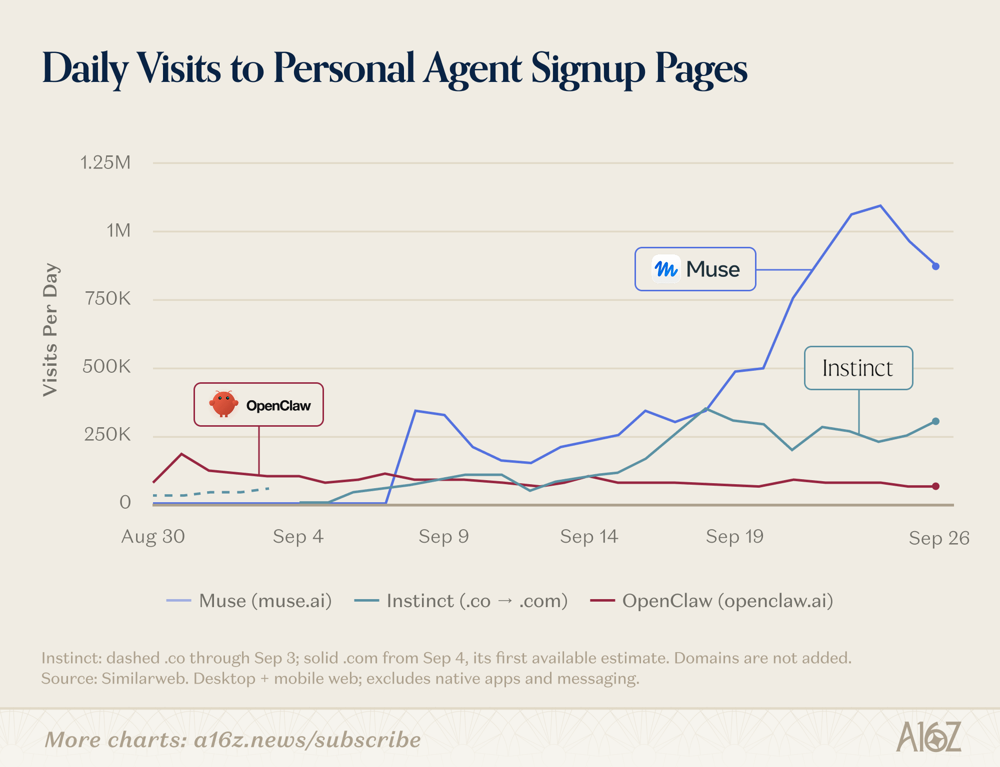
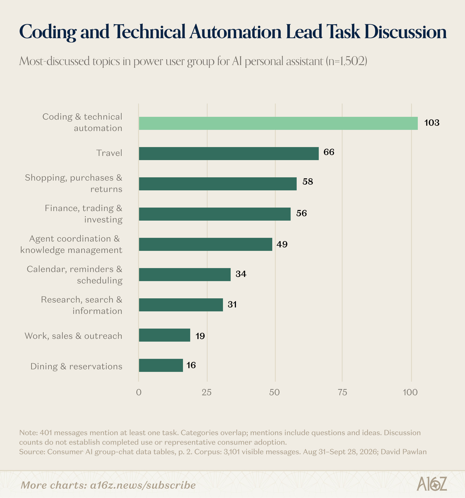
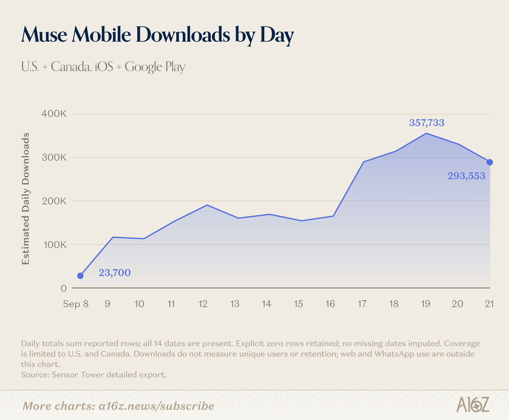
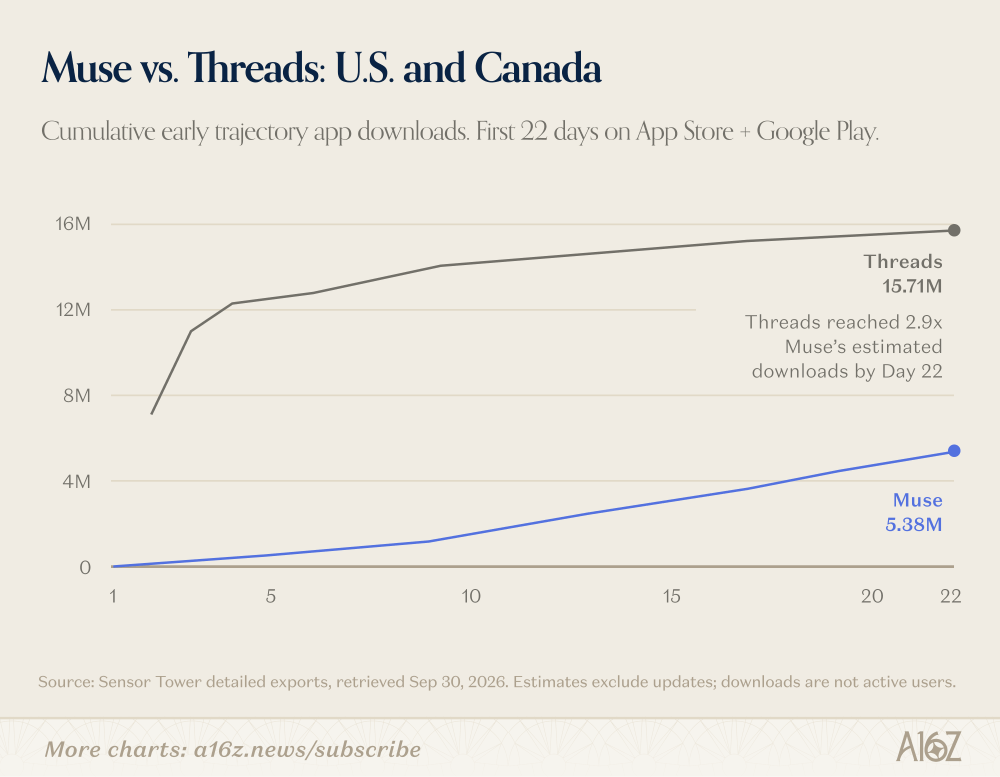
4. 在位者已经到了，创业公司还赢在哪
The previous list let in existing products once generative AI was core to the experience. They are now high on the page. Canva and Notion are in the web top ten, Figma in the web top 15. Superhuman, formerly Grammarly, stays in the top half of the web list and debuts at number four by spend. Google alone has five web entries: Gemini, NotebookLM, AI Studio, Labs, and Antigravity. Some of these products may only teach people what AI is and then lose them to a native app. Others can occupy the habit.
上一期开始允许老产品进榜，条件是生成式 AI 已经成为体验的核心。它们现在排得很靠前。Canva 和 Notion 在 Web 前十，Figma 在 Web 前十五。以前的 Grammarly、现在的 Superhuman 稳定在 Web 榜上半区，支出榜首期就到了第四。光是 Google 就有五个 Web 条目：Gemini、NotebookLM、AI Studio、Labs 和 Antigravity。其中一些可能只是把 AI 教给用户，再把人送给原生产品。另一些可以占住习惯。
The essay’s map of where a startup still has room has four rooms. Own a differentiated model: Suno is number 19 on the web and number 7 by spend, ElevenLabs is 25 and 10, and Midjourney, HeyGen, Kling, and Topaz Labs also make the spend list. A particular sound, look, or training set can matter more for one creative job than whichever lab has the strongest general model, even as Google expands Nano Banana and Veo and ChatGPT’s Images 2.0 draws heavy use. Own a multi-model experience: Cursor and OpenRouter route across labs, and a lab selling its own model has less reason to send the customer next door. Lovable, Cursor, Base44, and Replit are on the web list. Cursor moved from 41 to 35. Base44 debuts at 46. Own a specific audience: OpenEvidence enters the web list at 47 for physicians, Venice at 43 for private AI. The excluded adult products are cited here as evidence that content policy itself creates an audience. Own an interface the incumbent would have to break: a blank prompt, or Google Docs and Calendar. Plaud, a hardware notetaker plus a subscription, debuted at 16 by spend. The essay does not promise that hardware gap will last. Meta is putting Muse into glasses and an AI toy. OpenAI’s purchase of io is the hint on the other side.
文章给创业公司还留得下的地方画了四间。拥有一个差异化模型：Suno 是 Web 第 19、支出第 7，ElevenLabs 是 25 和 10，Midjourney、HeyGen、Kling 和 Topaz Labs 也在支出榜上。对某一种创意任务，一种特定的声音、样子或训练集，可以比「哪家实验室的通用模型最强」更要紧，即便 Google 在扩展 Nano Banana 和 Veo，ChatGPT 的 Images 2.0 也已经用得很猛。拥有多模型体验：Cursor 和 OpenRouter 在实验室之间做路由，卖自己模型的实验室没有多少理由把客户送到隔壁。Lovable、Cursor、Base44 和 Replit 在 Web 榜上。Cursor 从 41 升到 35。Base44 首期第 46。拥有一群需求明确的人：OpenEvidence 以医生用户进入 Web 第 47，Venice 以私密 AI 进入第 43。这里被排除的成人产品被当成证据：内容政策本身就会留出一群用户。拥有一个在位者必须拆掉旧界面才能做的体验：空白提示框，或者 Google Docs 和日历。Plaud 卖硬件笔记器再加订阅，支出榜首期第 16。文章没有保证这块硬件空隙会留住。Meta 正把 Muse 放进眼镜和一种 AI 玩具。OpenAI 收购 io，是另一侧的暗示。
The longer frame is the last two consumer-internet eras. Many of the largest businesses were transactions and networks. Almost none of today’s top consumer AI products have a real multiplayer loop. The category that does not exist yet is part of the argument.
更长的参照是前两轮消费互联网。很多最大的生意长在交易和网络上。今天的头部消费 AI 产品几乎都没有真正的多人循环。还不存在的品类，本身就是论证的一部分。
读图：文章给创业公司留的四个位置是差异化模型、多模型体验、特定人群，以及在位者得先拆掉自己界面才能做的体验。
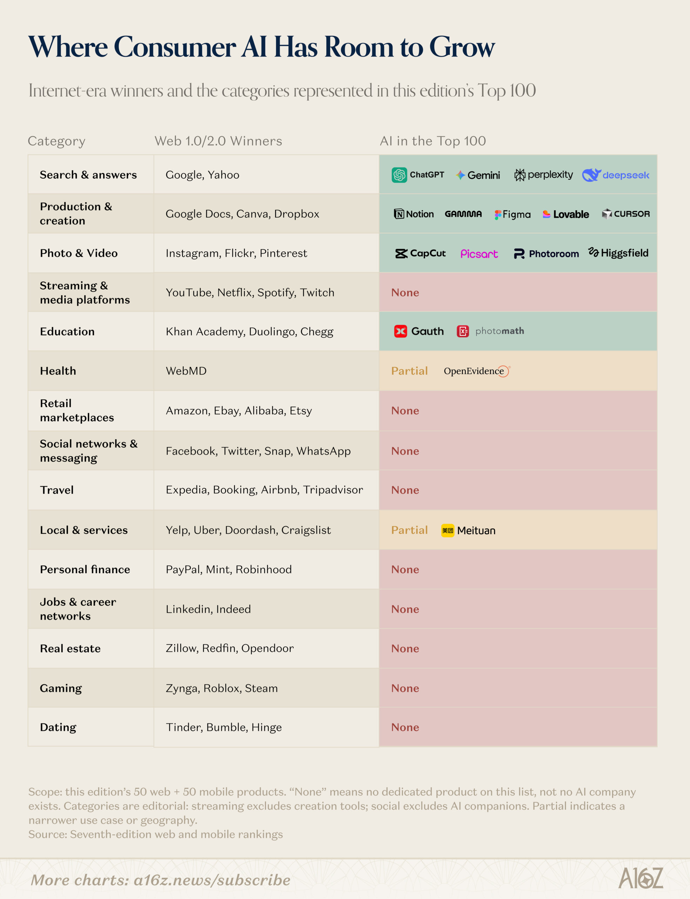
5. 大多数还在卖订阅
Of the 44 AI-native products in the top web ranks, every one already charges in some way. Subscriptions are offered by 84%, usage charges or extra credits by 64%, ads by 14%, and a transaction or platform fee by 2%. A product can do more than one, so the shares do not add to 100. This inverts the pre-AI consumer internet, where the consumer was the product. In 2025 advertising was 97.6% of Meta’s revenue and 73.2% of Alphabet’s. Amazon’s separately reported subscription services were $49.6 billion, 6.9% of its revenue.
Web 排名里的 44 个 AI 原生产品，每一个都已经在以某种方式收费。84% 提供订阅，64% 提供按量或额外点数，14% 有广告，2% 有交易或平台抽成。一个产品可以同时做几样，所以这些比例不能加总成 100%。这把 AI 之前的消费互联网倒了过来，那时消费者本身就是产品。2025 年广告占 Meta 收入的 97.6%，占 Alphabet 的 73.2%。Amazon 单独披露的订阅服务是 496 亿美元，占它收入的 6.9%。
Subscriptions at that scale have mostly been media businesses, where the customer pays for content they cannot get elsewhere, or for the ads to go away. Of the top 20 global consumer subscription products, 65% are media. ChatGPT is already inside that top 20 after three and a half years, which the essay reads as proof of how hard a giant paid consumer base is to build, not as proof that the model is easy.
做到这个规模的订阅，过去大多是媒体：用户为别处拿不到的内容付钱，或者为去掉广告付钱。全球前 20 个消费订阅产品里，65% 是媒体。ChatGPT 用三年半进入了这个前 20。文章把这读成「做一个巨大的付费消费者基本盘有多难」，不是读成「这个模式很容易」。
The cost structure explains the early paywall. Ads and take rates need a crowd. When serving a user was nearly free, companies could burn to get density. Model cost made that wait expensive. The essay expects the wait to get cheaper as open models spread and as products split tasks between frontier models and cheaper ones. Other models are already appearing at scale. OpenAI said in August that ChatGPT advertising had reached a $1 billion annualized run rate, on 1.2 billion weekly active users. An estimated 50% to 60% of U.S. physicians use OpenEvidence, which now monetizes partly with ads. Instinct and Muse have described a fee on transactions later. Neither takes it yet, and ChatGPT does not charge for purchases that start inside the product. The closing line is that subscriptions will remain a fit for many products, and that ads and transaction fees are how the same tools reach people who will not pay for software.
成本结构解释了为什么一开始就要付费墙。广告和抽成需要人群。服务一个用户几乎免费的时候，公司可以烧钱换密度。模型成本让这种等待变贵。文章预期，开源模型变多、产品把任务拆到前沿模型和更便宜的模型上之后，这种等待会变便宜。别的模式已经在规模上出现。OpenAI 在 8 月说，ChatGPT 广告的年化收入跑到了 10 亿美元，底座是 12 亿周活。估计 50% 到 60% 的美国医生在用 OpenEvidence，它现在有一部分靠广告变现。Instinct 和 Muse 都描述过以后要对交易收费。两家现在都还没收，ChatGPT 对从产品里发起的购买也不收费。结尾的判断是：订阅对很多产品仍然合适，广告和交易费则是同一类工具触达那些不愿为软件付钱的人的办法。
读图：84%、64%、14%、2% 可多选，加总超过 100% 是正常的。
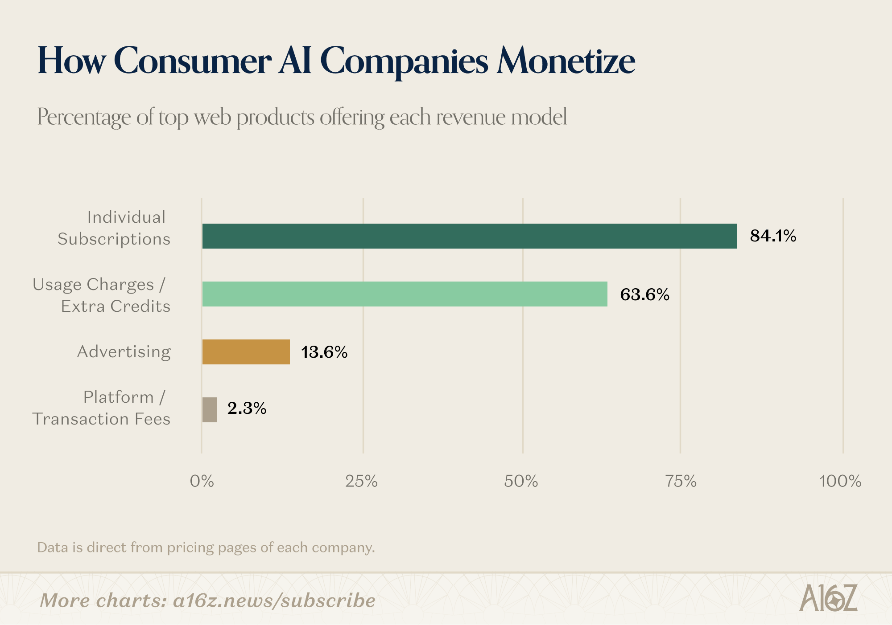
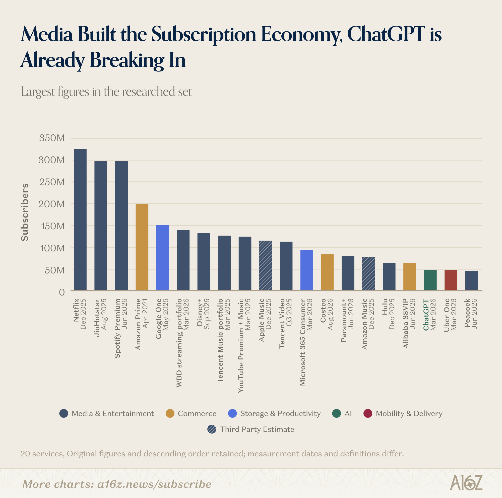
出处
- Olivia Moore, The Top 100 Gen AI Consumer Apps — 7th Edition, Andreessen Horowitz, 2026-10-05.
- 前六期从原文进入：第 6 期。更早几期的链接在原文开头。
- 采用面的调查：Pew, Americans and AI, 2026。
- 文中指向的市场图表 PDF：State of Markets, September 2026。
- 正文收录的图表版权归 Andreessen Horowitz 所有，逐图标注出处，可按图注链接回到 a16z 查看。